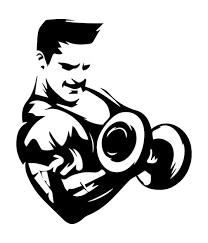

|

|
Lucky's Academia |
|---|
O Muay Thai, também conhecido como "A Arte das Oito Limbs", é uma das mais completas e eficazes artes marciais do mundo. Originário da Tailândia, esse esporte milenar combina técnicas de socos, cotovelos, joelhos e chutes, proporcionando um treino intenso e multifacetado que melhora a força, a resistência, a flexibilidade e o equilíbrio.
No Muay Thai, o praticante não apenas aprende a se defender, mas também adquire disciplina, foco e autocontrole. As aulas são ideais tanto para quem busca melhorar o condicionamento físico quanto para aqueles interessados em aprender técnicas de defesa pessoal ou competir.
Seja você um iniciante ou um praticante experiente, o Muay Thai é uma excelente escolha para quem deseja treinar de forma intensa, aprender habilidades valiosas e atingir novos níveis de condicionamento físico. Venha conhecer a nossa metodologia e descubra como o Muay Thai pode transformar o seu corpo e sua mente!
Seja você iniciante ou avançado, jovem ou idoso, o muay thau é adaptável às suas necessidades. Com orientação profissional, é possível desenvolver um programa de treino personalizado que respeite seus objetivos e limitações.